Sind Sie ein Frauenversteher oder eine Männerkennerin?
Frauen lesen «Gala», Männer «Auto Bild» – Mit den Klischees über die verschiedenen Geschlechter
füllt ein Mario Barth ganze Stadien. Doch finden sich solche auch wieder, wenn Herr und Frau Schweizer
zur Abstimmungsurne gehen?
Machen Sie den Faktencheck mit Andrea Maihofer, Professorin für Geschlechterforschung an der Uni Basel.
Männer stehen auf Technologie, bei schnellen Autos und röhrenden Motoren schütten sie massenweise Testosteron aus. Frauen dagegen lieben die Natur, nichts entzückt sie so sehr wie Blumen und herzige Tierchen.
Stimmt
Männer lieben ihr Auto und wollen Strassen dafür. Das zeigt die Abstimmung über die zweite Gotthardröhre. Wäre es nach den Frauen gegangen, gäbe es keinen zweiten Tunnel.
Wirklich. Frauen zeigten sich auch bei anderen Themen umweltfreundlicher als Männer. Zum Beispiel bei der Abstimmung über ein Verbot der Nahrungsmittelspekulation im Februar. Den Männern schien es egal, wenn Börsenhändler mit Getreide oder Soja Millionen verdienen. Den Frauen war das eher suspekt, vor allem im Baselbiet.
Nein, das Gentech-Moratorium von 1990 ist ein weiteres Beispiel. Dank den Frauen dürfen Bauern keinen Gentech-Mais anbauen. Und dass sich Laborratten heute immer noch mit Chemie vollpumpen lassen müssen, geht auf die Kappe der Männer. 1992 kippten sie ein Verbot von Tierversuchen, wie Politikwissenschaftler Claude Longchamp analysiert hat.
«Studien bestätigen, dass Frauen tendenziell umweltfreundlicher leben und abstimmen. Männer identifizieren sich mehr mit Verkehr. Es erstaunt deshalb nicht, dass Männer eine zweiten Gotthardröhre mehr begeistert. Bei der Nahrungsmittelspekulation sehe ich zwei Erklärungen. Frauen identifizieren sich weniger mit dem Bild eines Händlers, der an der Börse spekuliert – zumal Spekulanten in Fernsehen oder Zeitungen meist männlich sind. Meistens sind es Frauen, die kochen. Deshalb ist es ihnen eher suspekt, wenn Nahrung zweckentfremdet und an der Börse hin und her geschoben wird.»
Andrea Maihofer
Professorin für Geschlechterforschung an der Uni Basel
Männer lieben Waffen und zeigen Ausländern die harte Hand, Frauen haben es mehr mit Kuscheljustiz und schicken kriminelle Ausländer lieber zur Psychologin als ins Gefängnis.
Stimmt
Ausländer können von Frauen weniger Erbarmen erwarten als von Männern, zumindest im Baselbiet. So wollen Frauen kriminelle Ausländer ausschaffen und die Einwanderung stärker begrenzen als Männer, und dies auch mit härteren Regeln durchsetzen.
Nein, auch gegenüber Sexualstraftätern sind Frauen weniger gnädig. Das zeigte sich 2008 schweizweit bei der Unverjährbarkeitsinitiative: Sie wurde von Frauen lanciert und dank Frauen angenommen. Ihr Ziel: sexuelle Übergriffe an Kindern dürfen nicht verjähren.
Männer zeigen sich dann konservativer als Frauen, wenn es um ihr geliebtes Gewehr geht. Nur wegen ihnen wurde die Waffenschutz-Initiative 2008 abgelehnt. Die Initiative wollte, dass Armeeangehörige ihre Gewehre nicht mehr nach Hause mitnehmen, sondern im Zeughaus aufbewahren.

«Die Unterschiede überraschen mich nicht. Das Baselbiet ist ein konservativer Kanton. Zwar stimmen konservative Frauen linker als konservative Männer, aber bei der Sicherheit ist es umgekehrt. Da sind sie öfter für härtere Strafen. Ein Grund ist: Frauen fühlen sich verletzbarer als Männer, weil sie häufiger Opfer von Gewalt werden. Es ist deshalb auch kein Wunder, dass es beim Waffenbesitz umgekehrt ist und Männer hier eher für den Waffenbesitz stimmen: Zum einen ist für manche Männer ihre Waffe ein Zeichen von Männlichkeit. Auch haben sie weniger zu fürchten, wenn sie ein Gewehr im Keller haben.»
Andrea Maihofer
Professorin für Geschlechterforschung an der Uni Basel
Frauen kommen halt doch von der Venus und Männer vom Mars.
Gebärmutter hin oder her: So verschieden können Männlein und Fraulein nicht sein: In den letzten 30 Jahren kam es in der Schweiz insgesamt zu rund 240 Abstimmungen. Nur bei 14 davon gab das Geschlecht den Ausschlag für das Abstimmungsergebnis, wie Longchamps Analyse zeigt.
Im Baselbiet stimmen Männer und Frauen oft unterschiedlich ab. In Basel-Stadt waren bei vier von sechs Abstimmungen im Februar 2016 keine Geschlechterunterschiede auszumachen. Nur bei der Abstimmung über die zweite Gotthardröhre unterschieden sich die Stimmergebnisse von Frauen und Männern um elf Prozent und bei der Nahrungsmittelspekulation um vier Prozent.
«Ja, für Basel ist es auffallend, dass Frauen und Männer in vielen Themen ähnlich abstimmen. Das könnte unter anderem damit zu tun haben, dass Basel eine linke Stadt ist. In linken Milieus ist die Gleichstellung der Geschlechter schon sehr viel länger ein Thema. So waren viele linke Männer schon sehr früh für das Frauenstimmrecht oder die Erwerbstätigkeit der Frauen. Es gibt allerdings auch Themen, in denen die Stadt-Landunterschiede oder Bildung eine wichtigere Rolle spielen als das Geschlecht.»
Andrea Maihofer
Professorin für Geschlechterforschung an der Uni Basel